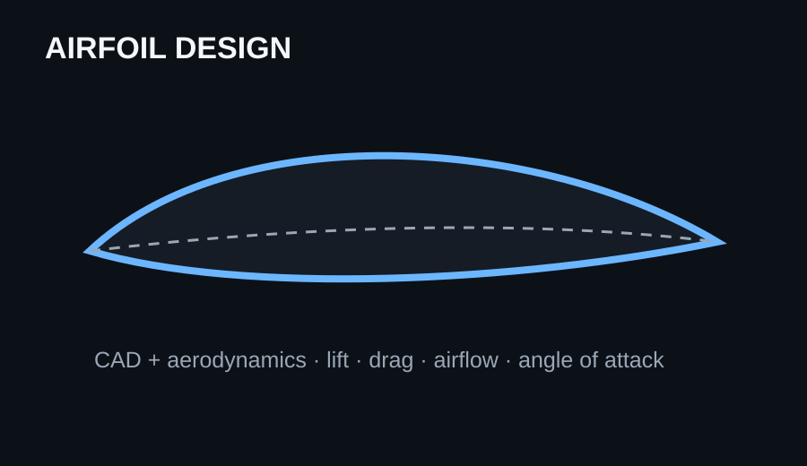

Airfoil Design
& Analysis
This project helped me understand that aircraft performance begins with geometry. I created an airfoil and studied how its shape affects airflow, lift, drag, and angle of attack.

The goal
The goal was to take an aerodynamic concept that I had learned about and turn it into an actual design. Instead of only discussing what an airfoil does, I wanted to understand how changing its geometry changes the way air moves around it.
My role & process
I completed the project individually. I researched the basic principles of airfoils, considered the relationship between shape and airflow, then built the geometry in CAD. I used the design process to connect concepts such as lift, drag, angle of attack, and airflow to a physical/modeling task.
Research
I studied why an airfoil has a curved shape, how airflow moves around it, and why angle of attack matters to lift and drag.
Design
I translated those ideas into a CAD model, focusing on making a usable aerodynamic profile rather than just a drawing.
Impact & success metric
The project met its goal by producing one completed airfoil CAD model and connecting its geometry to four core aerodynamic concepts: lift, drag, airflow, and angle of attack. The biggest impact was learning how an engineering idea becomes a design decision.
What I learned
I learned that aerodynamic design involves tradeoffs. A shape cannot simply be “good” in every situation; engineers have to think about the flight condition, the desired performance, and how geometry affects the forces on the aircraft.
Tools
Onshape · CAD modeling · Aerodynamics research · Engineering design · Technical communication